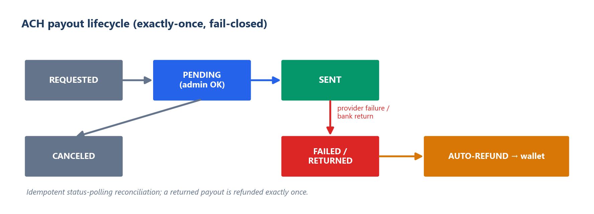

TL;DR
The hard part of a real-money platform isn't the database — it's wiring together a dozen third-party rails (payments, identity, geolocation, fraud, tax) so that real cash only ever moves to the right person, and every rail fails safely. I built and operated ShareShark's entire money-and-compliance stack solo: an idempotent ACH payout lifecycle, KYC/AML gating, encrypted PII, year-end tax reporting, and multi-signal geofencing — including a fix for the false-positives that wrongly block legitimate users.
The problem
On a money platform, the expensive failures live at the seams — where your code meets a payment processor, an identity vendor, a geolocation API, a webhook you didn't send. Real cash leaving to an unverified, geo-ineligible, or fraudulent user is the failure that actually costs you. So the design rule was simple: every external rail fails closed, and money only moves once every check has passed.
The ACH payout lifecycle (idempotent, fail-closed)
Withdrawals move real cash through an ACH provider (Payliance) as a state machine — REQUESTED → PENDING → SENT, with FAILED / RETURNED branches — gated by manual approval, with encrypted bank details and exactly-once auto-refund when the provider fails or the bank returns a transfer. The provider doesn't push reliable webhooks, so the system reconciles by idempotent status-polling: it can run reconciliation twice and never double-credit or double-refund.

The clever part: geofencing that doesn't punish real users
State-by-state eligibility means IP geolocation — but strict IP gating has a brutal failure mode. Cellular carriers route users through CGNAT pools that can resolve to a neighboring (sometimes ineligible) state, and VPN-detection false-fires on ordinary privacy browsers. Naive geofencing quietly blocks legitimate users on their phones.
So I built a tiered pipeline: a fast local MaxMind lookup first, a paid precision API only as a second opinion (to conserve credits), and an authoritative browser-GPS override that settles eligibility regardless of what the IP says — plus confidence-tiered VPN handling (hard-block relay/Tor, log-but-allow soft signals). Compliance stays strict; real users stop getting wrongly turned away. Keeping the gate tight without locking out real customers is the part most people get wrong.
Identity, encryption, and tax
- KYC (Veriff) — government-ID + selfie/liveness, triggered at identity, tax, and velocity thresholds (plus random audit), with fail-closed, constant-time HMAC webhook verification so a forged "approved" callback can't slip through.
- Encryption at rest — AES-256-GCM for SSNs and bank details; masked display everywhere.
- Tax — W-9 collection at the IRS reporting threshold, feeding a year-end 1099 pipeline.
- Fraud / AML — device fingerprinting for multi-account detection, plus velocity caps, risk holds, and suspicious-activity logging.
Payments that are safe to retry
Settlement and refunds run on schedules, so they have to be safe to run more than once. Every money-moving step is idempotent — a completed payout or an issued refund can't be issued again — so a retry, an overlapping job, or a provider hiccup never double-pays.
Validation & testing
Focused tests on the highest-risk money paths (payouts, refunds, redemption gating), and separate staging and production environments so changes were exercised before they could touch real funds.
What this demonstrates
- Regulated-money fluency — ACH, KYC/AML, tax, encryption, geofencing and fraud — integrated and shipped, not theorized.
- Integration discipline — a dozen third-party rails wired so each one fails closed.
- Product-minded compliance — keeping the gate strict without blocking legitimate users (the geo-rescue is the proof).
Tech stack
Python · Django · Django REST Framework · PostgreSQL · Celery / Redis · AES-256-GCM · Payliance (ACH) · Veriff (KYC) · MaxMind (geolocation) · deployed on AWS behind Nginx/Gunicorn.
Honest notes
ShareShark operated pre-launch / low-traffic, so this is design-and-integration work, not "battle-tested at N TPS." Third-party services (Payliance, Veriff, MaxMind, the fingerprinting vendor) do real work; the contribution is the integration design, the fail-closed and idempotent wiring, the geolocation-rescue insight, and the breadth of compliance shipped by one person.